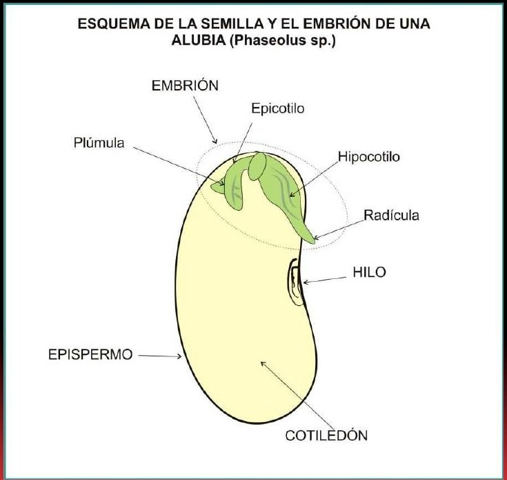
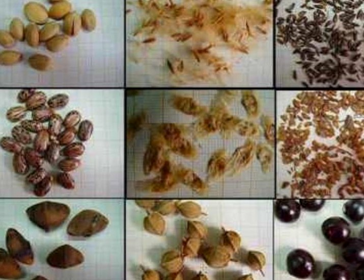
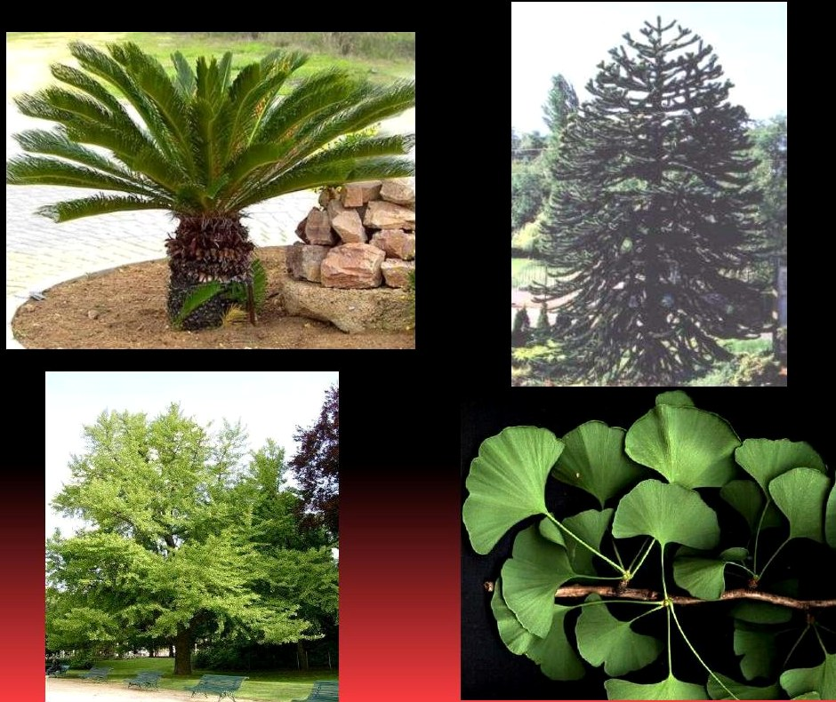
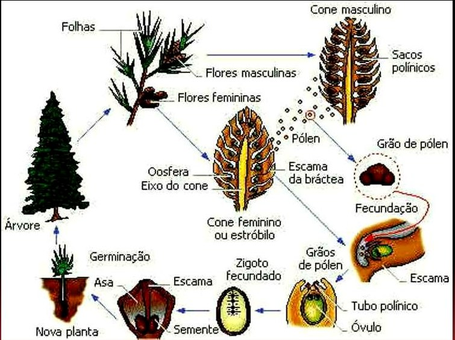
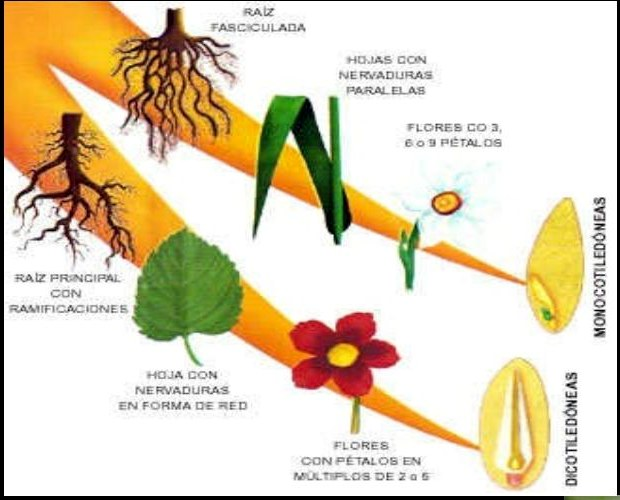
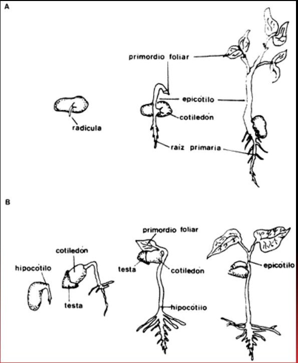

Parece quieta. Cerrada. Casi sin historia. Pero bajo su cubierta hay un embrión, una reserva de alimento y la posibilidad de que el crecimiento vuelva a comenzar. Este curso sigue ese recorrido, desde lo que la semilla guarda hasta el instante en que despierta.
4 módulos30 minutos cada uno6 imágenes8 preguntas
La promesa del recorrido
Seguir una vida en pausa
Primero abriremos la semilla para descubrir sus partes. Después veremos que no todas se desarrollan del mismo modo. Finalmente llegaremos al agua, el oxígeno y la temperatura que permiten reanudar el crecimiento.
01
Capítulo 1 · 30 minutos
El secreto dentro de la semilla
¿Cómo puede algo tan quieto contener el comienzo de otra planta?
Al terminar podrás describir una semilla y relacionar sus componentes con las adaptaciones de las plantas de semilla.
10 min historia6 min conceptos5 min observación6 min actividad3 min comprobación
La escena inicial
Una semilla no es una planta en miniatura a simple vista. Es una estructura cerrada. Para entender lo que puede llegar a ocurrir, primero hay que atravesar esa cubierta y mirar en su interior.
Tres pistas bajo la cubierta
La primera pista es el embrión vegetal. La segunda es el alimento reservado para él. La tercera es la cubierta externa que lo protege. Juntas explican por qué la semilla no es un objeto inerte, sino una estructura capaz de germinar cuando encuentra condiciones adecuadas.
Una semilla reúne el embrión de la planta, tejidos nutritivos y una cubierta protectora o testa. Así comienza la historia: una vida vegetal ya formada en estado embrionario, con alimento disponible y una envoltura alrededor.
1Embrión vegetal
2Alimento almacenado
3Cubierta externa
Tres partes, una sola estrategia
Imaginemos que pudiéramos separar esas tres partes. El embrión, por sí solo, sería una vida vegetal en estado inicial. La reserva nutritiva, aislada, sería alimento sin un organismo que lo utilice. La cubierta, vacía, sería apenas una envoltura. La capacidad de la semilla aparece cuando las tres funcionan juntas.
El embrión aporta la posibilidad de una nueva planta. El alimento almacenado permite sostener las primeras etapas del crecimiento. La cubierta externa rodea y protege el conjunto. Por eso la definición no es una lista casual: cada elemento responde a una necesidad diferente del comienzo de la vida vegetal.
La semilla madura puede permanecer cerrada y, aun así, conservar esa organización interna. Su quietud exterior no significa ausencia de estructura. Significa que el embrión, la reserva y la cubierta están reunidos antes de que la germinación comience.

Esquema de la semilla y el embrión de una alubia.

Semillas de diferentes formas, tamaños y colores.
Adaptaciones y transporte
Ahora aparece un dato que cambia la escala de la historia. Estas semillas pertenecen a plantas vasculares capaces de vivir en la mayoría de los ambientes terrestres y en muchos ambientes acuáticos. Son el grupo de plantas más abundante y reúnen más de 200.000 especies.
La mayoría está adaptada a la vida en tierra, y varias de sus adaptaciones se relacionan con la reproducción. Una diferencia decisiva es que no se necesita agua para que ocurra la fecundación. La reproducción deja de depender de que el agua exterior reúna las células reproductoras.
Después, cuando comienza el crecimiento, la reserva almacenada en la semilla aporta energía durante las primeras etapas. La semilla no solo contiene un embrión: lleva consigo una provisión para ese inicio.
En la planta vascular, el floema mueve alimento y el xilema transporta agua. Los dos tejidos también aportan soporte estructural. Transporte, sostén y reproducción forman así parte de una misma historia de adaptación.
Reconstruir el comienzo completo
Ya podemos contar la historia sin mirar la semilla como un objeto aislado. Primero existe una planta vascular capaz de formar semillas. La fecundación puede ocurrir sin necesidad de agua. Después aparece una semilla madura que reúne un embrión, alimento y una cubierta protectora.
En condiciones adecuadas, esa estructura es capaz de germinar y producir otra planta de la misma especie. Entre la semilla madura y la nueva planta se encuentra el momento que todavía no estudiamos: la reanudación del crecimiento. Por ahora alcanza con reconocer que el embrión ya está presente y que la reserva nutritiva sostendrá sus primeras etapas.
Cuando la planta se desarrolla, el sistema vascular vuelve a ocupar el centro de la escena. El xilema transporta agua, el floema mueve alimento y ambos tejidos aportan soporte. La reserva interna permite empezar; los tejidos de la planta permiten continuar el transporte y el sostén.
Esta secuencia ayuda a distinguir funciones que suelen mezclarse. La cubierta protege; no transporta agua. El alimento almacenado aporta energía temprana; no reemplaza al embrión. El xilema pertenece al sistema de transporte de la planta; no es una de las tres partes básicas usadas para definir la semilla.
La pregunta que queda abierta
Ya sabemos qué guarda una semilla. Pero todavía no sabemos dónde se desarrolla. ¿Queda expuesta o aparece rodeada por otra estructura? Esa diferencia abre dos caminos.
¿Qué cambia cuando una semilla no está rodeada por un fruto?
Al terminar podrás reconocer el rasgo de las gimnospermas, sus órdenes y las características descritas para las coníferas.
10 min historia6 min conceptos5 min observación6 min actividad3 min comprobación
El primer giro
La historia se divide según una sola pregunta: ¿dónde se desarrolla la semilla? En un camino queda dentro de una fruta. En el otro no hay fruto alrededor. Sigamos primero el camino de la semilla desnuda.
El camino de la semilla desnuda
Las gimnospermas comparten una característica que les da identidad: sus semillas no están rodeadas por un fruto. Esa pista permite reconocer el grupo antes incluso de entrar en sus diferencias internas.
La clasificación de las plantas de semilla comienza en el lugar donde la semilla se desarrolla. Si queda dentro de una estructura llamada fruta, seguimos el camino de las angiospermas. Si no se desarrolla dentro de un fruto, entramos en el territorio de las gimnospermas.
La expresión “semilla desnuda” resume esa segunda posibilidad. No quiere decir que la semilla carezca de cubierta o de embrión: quiere decir que no está rodeada por un fruto. Esa precisión evita confundir el rasgo que define al grupo con las partes internas de la semilla.
Pero el camino vuelve a abrirse. Las gimnospermas se organizan en tres órdenes: Cycadales, Ginkgoales y Coniferales. Comparten la semilla desnuda, aunque se diferencian por su representación actual y sus características.
Orden 1
Cycadales
Representadas por pocas especies vivientes, remanentes de grupos que poblaron la superficie terrestre en otras épocas geológicas.
Orden 2
Ginkgoales
Presentadas mediante un único representante vivo de un orden que fue abundante y muy difundido.
Orden 3
Coniferales
El grupo más importante, formado en su mayoría por plantas arbóreas y resinosas, generalmente de grandes dimensiones.
Tres órdenes, tres maneras de ubicarlos
Las Cycadales aparecen como un grupo de pocas especies vivientes, restos de grupos numerosos que poblaron la superficie terrestre en otras épocas geológicas. Las Ginkgoales concentran esa continuidad en un único representante vivo de un orden que antes fue abundante y muy difundido.
Las Coniferales cambian la escala: constituyen el grupo más importante de las gimnospermas y están formadas, en su mayor parte, por plantas arbóreas, resinosas y generalmente de grandes dimensiones. Raramente son arbustivas.
Para recordarlas, no hace falta memorizar tres nombres aislados. Podés asociar Cycadales con pocas especies sobrevivientes, Ginkgoales con un único representante vivo y Coniferales con el grupo arbóreo y resinoso más importante.

Ejemplos visuales de gimnospermas.
Características compartidas
La semilla desnuda permite identificar a las gimnospermas. Sus otros rasgos ayudan a construir una imagen más completa de estas plantas:
Son plantas leñosas, frecuentemente de grandes dimensiones.
Por lo general poseen canales resiníferos.
El cambium permite el crecimiento en grosor.
El xilema del tallo posee traqueidas y parénquima leñoso, sin fibras ni vasos leñosos; por eso producen maderas blandas.
Las hojas suelen ser persistentes y tener forma de aguja o escama.
Sus flores unisexuales presentan escamas con sacos polínicos en las masculinas y óvulos en las femeninas.
Los rasgos se pueden agrupar en tres planos. El porte leñoso, el cambium y el xilema describen su estructura. Los canales resiníferos y la forma de las hojas ayudan a reconocer su aspecto. Las flores unisexuales y sus escamas conducen nuevamente hacia la reproducción.

Ciclo reproductivo de una conífera.
El cono dentro de la historia
Las coníferas son las gimnospermas más familiares e importantes. Usualmente producen conos: estructuras que contienen sus semillas. Esa relación une lo que ya sabemos del grupo con el esquema reproductivo.
En el recorrido visual aparecen conos masculinos y femeninos, polen, fecundación, semilla, germinación y una nueva planta. La semilla no es el final de la secuencia. Es el punto desde el cual puede comenzar otra vez el crecimiento.
Los árboles y arbustos de este grupo pueden crecer en conjuntos grandes y densos, hasta formar extensos bosques. La escala del bosque contrasta con la escala mínima de la semilla contenida en el cono.
El otro camino
La semilla desnuda ya reveló sus órdenes, sus conos y sus rasgos. Falta explorar la otra posibilidad: una semilla que se forma dentro de un ovario y termina rodeada por un fruto.
¿Cómo se transforma un óvulo protegido en una nueva semilla?
Al terminar podrás explicar la relación entre óvulo, ovario, semilla y fruto, y comparar monocotiledóneas con dicotiledóneas.
10 min historia6 min conceptos5 min observación6 min actividad3 min comprobación
La escena cambia
Ahora aparece la flor. No funciona solo como una señal visible: es un órgano de reproducción. En su interior, el ovario encierra los óvulos. Allí comienza el segundo camino.
El grupo más diverso
Las angiospermas, también llamadas plantas de flores, son más diversas que las gimnospermas. Reúnen unas 215.000 especies y forman el grupo mayor de plantas. También se encuentran en una variedad más amplia de ambientes.
Esa diversidad no borra el rasgo que las une. Todas nos devuelven a la flor y a una semilla que se desarrolla dentro de un ovario. La variedad de formas y hábitats se sostiene sobre una misma relación reproductiva.
La flor aumenta las posibilidades de una reproducción exitosa. Sus piezas protectoras, cáliz y corola, son visibles en la mayoría de los casos y aparecen reducidas en algunos grupos.
Del óvulo a la semilla
En las angiospermas, los óvulos están encerrados en una cavidad u ovario. Después de la polinización y la fecundación, la semilla se forma a partir del óvulo. El ovario, a su vez, da lugar a un verdadero fruto.
La diferencia con el capítulo anterior ya es visible: la semilla no queda desnuda. Se desarrolla dentro de la parte del carpelo que rodea y protege los óvulos reproductores. El fruto se convierte así en la estructura que rodea a la semilla.
Conviene separar dos transformaciones. La semilla se forma a partir del óvulo después de la polinización y la fecundación. El ovario, en cambio, da lugar al fruto. Si se confunden estas dos líneas, se pierde la relación central del proceso.
Óvulo→Polinización y fecundación→Semilla
Ovario→Fruto
Sistema conductor y hojas
Las angiospermas comprenden plantas leñosas y herbáceas. Sus vasos leñosos están constituidos por traqueidas y tráqueas. Su sistema conductor facilita la conducción de la savia y mejora el transporte y la distribución del agua.
Ese sistema de distribución es más eficaz y variado que el de las gimnospermas. La diferencia no se limita a una estructura interna: se relaciona también con la aparición de hojas laminares y delgadas con nervaduras reticuladas.
Las nervaduras llevan agua a todas las células de la hoja y reciben de ellas los productos elaborados, que luego se transportan hacia las partes no fotosintetizantes. El sistema conecta, por lo tanto, la llegada del agua con la salida de productos hacia otros sectores de la planta.
Monocotiledóneas y dicotiledóneas
La clase de las angiospermas se divide en dos grandes subclases: monocotiledóneas y dicotiledóneas. La comparación comienza dentro de la semilla, con la cantidad de hojas primarias o cotiledones.
Las monocotiledóneas poseen una hoja primaria. Las dicotiledóneas poseen dos. Ese primer contraste da nombre a los grupos, pero no es la única diferencia: también cambian el patrón de las venas de las hojas, el número de partes florales y la producción de tejido leñoso.
En las dicotiledóneas, el engrosamiento del tallo ocasiona la producción de tejido leñoso. En las monocotiledóneas esa producción es rara. Así, una distinción que comienza en el cotiledón se prolonga hacia otros rasgos de la planta.
RasgoMonocotiledóneasDicotiledóneas
Hojas primariasUnaDos
VenaciónSe presenta un patrón diferenteSe presenta un patrón diferente
Partes floralesDifieren en númeroDifieren en número
Tejido leñosoSu producción es raraSe produce por engrosamiento del tallo

Comparación visual de monocotiledóneas y dicotiledóneas.
Comparar sin fragmentar
Una tabla puede hacer que cada rasgo parezca independiente. Sin embargo, la comparación se vuelve más clara cuando reunimos las pistas. Una monocotiledónea no se reconoce solo por una hoja primaria: esa pista se lee junto con la venación, las partes florales y la producción rara de tejido leñoso.
En las dicotiledóneas ocurre lo mismo. Los dos cotiledones forman la primera pista; el patrón de las hojas, el número de partes florales y la producción de tejido leñoso por engrosamiento del tallo completan la descripción.
El objetivo no es memorizar casillas aisladas, sino aprender a pasar de un rasgo a un conjunto. Cuando varias pistas apuntan en la misma dirección, la clasificación se vuelve más sólida.
La pausa antes del final
La semilla ya se formó y quedó protegida. Sin embargo, el crecimiento embrionario no continúa de inmediato: entra en una fase de descanso. ¿Qué tiene que ocurrir para que vuelva a empezar?
¿Qué combinación consigue que el crecimiento embrionario vuelva a comenzar?
Al terminar podrás diferenciar semillas epígeas e hipógeas, definir viabilidad y ordenar las condiciones y cambios de la germinación.
10 min historia6 min conceptos5 min observación6 min actividad3 min comprobación
El último misterio
Dentro de la cubierta, el embrión espera. Pero la espera no dura lo mismo para todas las especies, ni cualquier ambiente puede terminarla. Antes del despertar aparece una palabra clave: viabilidad.
Dos comportamientos de los cotiledones
Cuando la germinación se hace visible, los cotiledones no ocupan siempre la misma posición. El contraste entre semillas epígeas e hipógeas se reconoce siguiendo lo que ocurre con ellos durante el desarrollo.
Epígeas
Al desarrollarse activamente el tallo embrionario, lleva consigo los cotiledones, que permanecen adheridos a él.
Hipógeas
Conservan sus cotiledones en el suelo.
La diferencia se puede formular como una pregunta de seguimiento: ¿los cotiledones acompañan el desarrollo del tallo embrionario o permanecen en el suelo? Esa pregunta permite leer la secuencia sin depender solamente de los nombres.

Secuencias comparadas de germinación epígea e hipógea.
La cuenta regresiva de la viabilidad
Una semilla viable es capaz de germinar y transformarse en un organismo sano. La palabra no describe su tamaño, su forma ni su color: describe una capacidad. La pregunta es si todavía puede reanudar el crecimiento y producir un organismo sano.
Pero esa capacidad tiene una duración propia en cada especie. La posibilidad existe; el tiempo disponible no es igual para todas. Las semillas del sauce conservan la viabilidad durante unos días después de desprenderse del árbol parental. En el otro extremo, a las semillas del loto oriental se les atribuye poder germinativo después de 3.000 años de dispersión.
Los dos ejemplos impiden pensar en una duración universal. Cada especie botánica tiene su propio período de viabilidad. Si la siembra ocurre después del período óptimo, la historia puede cambiar: pueden aparecer plantas débiles o la semilla puede no germinar.
Por eso una semilla puede conservar intacta su apariencia y, sin embargo, haber perdido la capacidad que importa. La viabilidad se comprueba en la posibilidad de germinar y transformarse en un organismo sano.
Y entonces, el crecimiento se reanuda
Ese momento tiene un nombre: germinación. Es el proceso por el que el crecimiento embrionario vuelve a comenzar después de la fase de descanso. La definición contiene dos momentos inseparables: primero hubo una pausa; después, el crecimiento se reanuda.
El fenómeno no comienza antes de que la semilla sea transportada por algún agente de dispersión hasta un medio favorable. Llegar a un lugar nuevo no basta por sí solo. En ese medio deben reunirse condiciones determinadas.
Aguaaporte suficiente
Oxígenoaporte suficiente
Temperaturaapropiada para la especie
El agua y el oxígeno deben estar disponibles en cantidad suficiente. La temperatura debe ser apropiada para la especie: cada una tiene una preferencia determinada y, en general, los extremos de frío o calor no favorecen la germinación. Algunas semillas necesitan además un tiempo determinado de exposición a la luz.
Las condiciones no actúan como opciones intercambiables. Tener agua no compensa una temperatura extrema; una temperatura apropiada no reemplaza la falta de oxígeno. El medio se vuelve favorable cuando las necesidades determinantes se reúnen.
Durante el proceso, el agua se difunde a través de las envolturas y llega al embrión, que durante el descanso se había secado casi por completo. La entrada de agua produce un cambio visible: la semilla comienza a hincharse.
El hinchamiento puede avanzar hasta rasgar la envoltura externa. Lo que al principio protegía la vida en pausa se abre cuando el crecimiento vuelve a comenzar. La historia completa queda reunida en ese cambio: entrada de agua, aumento de volumen y apertura de la cubierta.
Medio favorable→Entrada de agua→Hinchamiento→Apertura de la envoltura
Tres preguntas antes del despertar
Antes de afirmar que una semilla germinará, hay que resolver tres cuestiones. La primera mira hacia la semilla: ¿sigue siendo viable? La segunda mira hacia el ambiente: ¿hay agua, oxígeno y una temperatura apropiada? La tercera mira hacia el proceso: ¿el agua ya atravesó las envolturas y llegó al embrión?
Estas preguntas separan capacidad, condiciones y cambios. Una semilla puede ser viable pero encontrarse en un medio desfavorable. También puede llegar a un medio adecuado y comenzar entonces la secuencia visible del hinchamiento y la apertura.
El recorrido se cierra
Comenzamos frente a una estructura quieta. Ahora podemos ver el embrión, su alimento y su cubierta; distinguir los caminos de gimnospermas y angiospermas; y reconocer las condiciones que ponen fin al descanso.